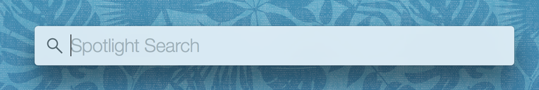
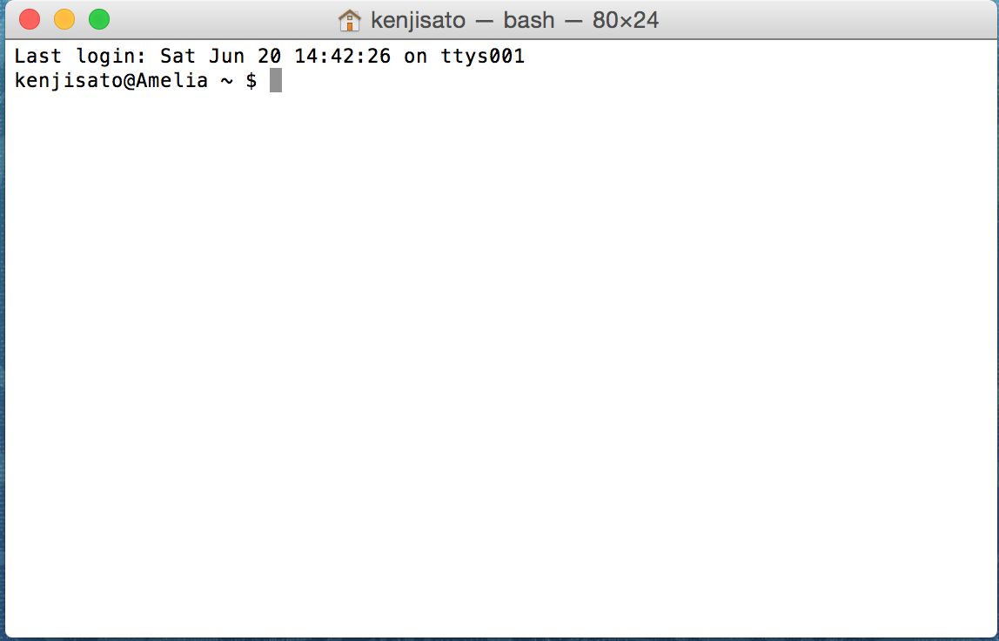
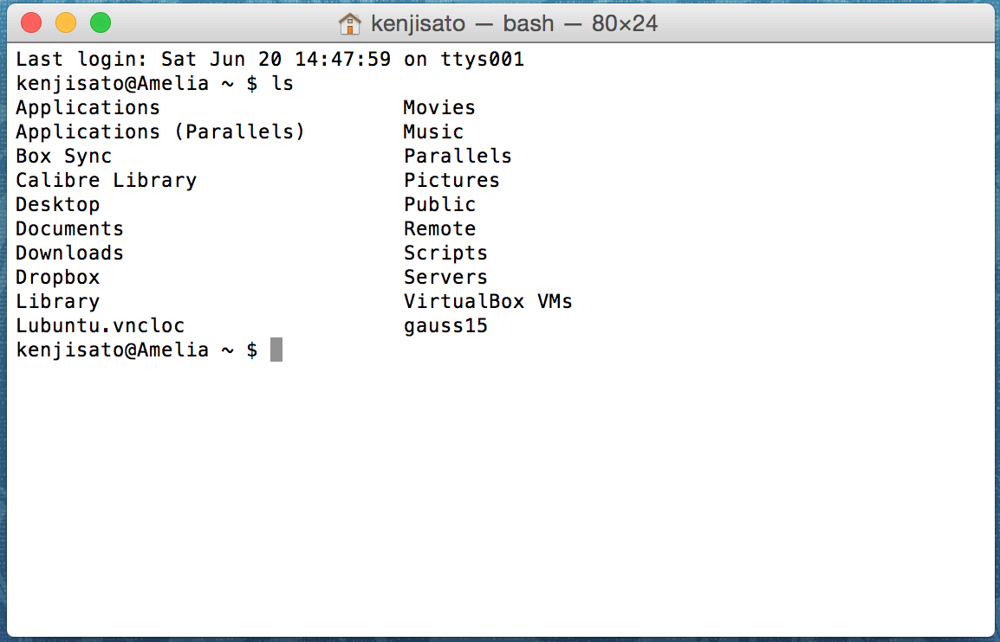

キーボードのControlキーとSpaceキーを同時に押してください. (設定を変更していなければ) 下のようなスポットライト検索の画面が現れます. ここに, 「 terminal 」と入力してリターンを押してください.
ターミナルを起動すると次のような画面が立ち上がります.
以下では, シェル (Terminal) でコマンド入力するということを指示するときには, 次の記法を用います. 上の スクリーンショットと見比べてください:
$ ls
シェルに 「 ls 」とだけ入力してエンター（リターン）を押してください. 次のような出力となります.
コマンドに加えて, コマンドの出力を表示するときは, 画面キャプチャの代わりに次のように書くことにします.
$ ls
Applications Movies
Applications (Parallels) Music
Box Sync Parallels
Calibre Library Pictures
Desktop Public
Documents Remote
Downloads Scripts
Dropbox Servers
Library VirtualBox VMs
Lubuntu.vncloc gauss15
「 ls 」コマンドは, シェルが現在基準点としている作業ディレクトリ (カレントディレクトリ) の中身をリストするためのコマンドです.
他にもいくつか大切なコマンドがあるので覚えてください.
現在の作業ディレクトリ（カレントディレクトリ）へのパスを表示するコマンド 「 pwd 」:
$ pwd
/Users/kenjisato
シェルを実行しているときには「自分がどのディレクトリで作業しているか？」ということを意識しておくとよいでしょう.
作業ディレクトリを移動するコマンド 「 cd 」. カレントディレクトリ内にある Documents に移動します. 入力途中で (例えば Doc だけ入力して) TABキーを押すと候補が表示されます.
$ cd Documents
$ pwd
/Users/kenjisato/Documents
同じコマンドですが, 親ディレクトリ (カレントディレクトリを含んでいるディレクトリ) に移動するには次のようにします.:
$ cd ..
$ pwd
/Users/kenjisato
「 / 」から始まる完全なパス(絶対パス) を指定して移動することもできます.
$ cd /Users/kenjisato/Documents
カレントディレクトリに子ディレクトリを追加するには, 「 mkdir 」コマンドを使います. workspace という名前のディレクトリを作ってみましょう.:
$ mkdir workspace
これからの作業はすべて, 今新しく作ったディレクトリの中で行うことにしましょう. Python のインタラクティブセッションを開始しましょう.
$ cd workspace
$ python
次のような表示が出れば成功です:
Python 3.4.3 |Anaconda 2.2.0 (x86_64)| (default, Mar 6 2015, 12:07:41)
[GCC 4.2.1 (Apple Inc. build 5577)] on darwin
Type "help", "copyright", "credits" or "license" for more information.
>>>
いま実行されているのはPython のインタラクティブシェルというアプリケーションです. 「 >>> 」と書かれているののは, シェルが入力待ち状態に なっているという意味です. ターミナルのシェルコマンドは, 「 $ command_name 」 で表しました. 「Python のシェルに入力して ください」ということを 「 >>> 」を付けて表します. シェルの出力については先ほどと同様に扱います. すなわち, >>> を書いている行は読者が 入力することを想定していて, >>> を書いてない行はそのコマンドを実行した結果を表示したものです:
>>> import this
The Zen of Python, by Tim Peters
Beautiful is better than ugly.
Explicit is better than implicit.
Simple is better than complex.
Complex is better than complicated.
Flat is better than nested.
Sparse is better than dense.
Readability counts.
Special cases aren't special enough to break the rules.
Although practicality beats purity.
Errors should never pass silently.
Unless explicitly silenced.
In the face of ambiguity, refuse the temptation to guess.
There should be one-- and preferably only one --obvious way to do i
Although that way may not be obvious at first unless you're Dutch.
Now is better than never.
Although never is often better than *right* now.
If the implementation is hard to explain, it's a bad idea.
If the implementation is easy to explain, it may be a good idea.
Namespaces are one honking great idea -- let's do more of those!
シェルを終了するときは:
>>> exit()
を実行します.
Sublime Text 3 はコマンドラインから呼び出すことができます. このページを参考に設定してください https://www.sublimetext.com/docs/3/osx_command_line.html . その上で, 次のように実行します:
$ subl hello.py
と入力してください. Sublime Text 3 が起動して同名のファイルを開きます (なければ作成されます).
Sublime Text 3 を使っていないくても結構ですが, いずれにせよシェルのカレントディレクトリと同じ場所に「 hello.py 」ファイルを次の内容で 作成してください.:
# hello.py
print('Hello, world!')
それから, シェルで次のコマンドを実行して出力を確認してください.:
$ python hello.py
Hello, world!
「 hello.py 」のように命令を書き連ねたファイルをスクリプトファイルと呼びます. 計算や作図の手続きをスクリプトファイル （たとえば「script.py」という名前にしたとしましょう）に書き, シェルで:
$ python script.py
を実行して結果を出力する, というのがプログラムの作成から実行の基本的な流れになります.
{kind=link}
{kind=link}
{kind=link}